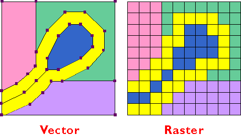

Introduction
A little context...
OpenLayers isn't just about being able to make a map online. There are many ways to accomplish that task. OpenLayers is in a set of geographic tools working together to create a geographic information system. Geographic information systems are often referred to as simply GIS. The power of GIS isn't so much being able to see lines and shapes in a map, but rather your ability to interact with and analyze geographic information in a mapping environment.
For example, a common geographic task that we each have encountered... Where is a good place to eat nearby? Without GIS this task becomes quite difficult particularly in unfamiliar areas. Without prior knowledge a person may just start walking and hoping for the best. GIS makes this task a little more simple by putting your surroundings in context. Your mobile device knows your general location with it's on-board GPS (global position system) and their are a variety of geographic databases with an inventory of all the restaurants within a city. GIS combines the restaurant location and a map together by placing the restaurants in a known coordinate system. Even at that point, a map showing just the restaurant locations and not necessarily all of the resturant names isn't very helpful. Because GIS combines a database with a geographic feature in the map(in this case a restaurant) we now can learn whatever we need to about that feature by simply clicking on it.
Geographic Lingo and Data Types
Similar to the computer science realm, professionals in the GIS world talk a little different. The list could go on forever, but some important terms are noted here for clarity:
| Layers - Layers are a geographic dataset overlayed on top of a map. Suppose we wanted to build a map of downtown New York... some important layers we would include in that map are streets, buildings, sidewalks, parks, etc. The most important thing to pay attention with layers is order. In GIS this typically means we put points, lines, and polygon layers in a map in that order. Any other arrangement and important information gets covered up. |  |
| Coordinate Systems and Projections - Coordinate Systems are essential to understand in GIS. They are essentially a mathematical system of placing geographic ordered-pairs on a flat surface. Projections are using to force the curvature of the earth into that flat surface. In GIS there is two particular usages of coordinate systems and projections to be aware of. The first is the coordinate system of the map itself, and the second is the coordinate system of the layers that are being placed onto the map. As a general rule online maps tend to perform better when the layer's coordinate systems match the maps. The most common coordinate system in web mapping is called WGS 84 Web Mercator. This has become the go-to coordinate system because its inherit ability to receive latitude and longitude pairs as coordinates.(Learn more about Web Mercator here) | |
| Vector Datasets - Vector data is any type of graphic that can is represented by a group of coordinate pairs at its vertices. For example a line graphic in Microsoft Word is a vector. Vectors are rendered by the computer using its inherit coordinates, continuing with the Microsoft World example we could say that a certain line vector has a beginning coordinate point at 1 inch from the top of the page and 1 inch from the left of the page and and ending point at one inch from the bottom of the page and one inch from the right of the page. Similarly in GIS a line feature representing a street has a point at the beginning of the street and a point at the end of the street. A polygon feature is simply a line feature that begins and ends at the same point. | |
| Tile/Raster Datasets - Raster datasets are datasets whose most fundamental unit is a pixel. The most common raster dataset in GIS is aerial imagery. Aerial imagery on Google Maps typically represents a 1 foot square on the ground in the real world with one pixel in the imagery, calculating the average color for all of the items within the square foot. Raster data by nature is much larger because each pixel value takes up memory. Vector datasets on the other hand just need store the coordinate pairs for each vertex of a line or polygon. |  |